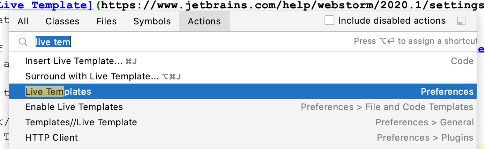
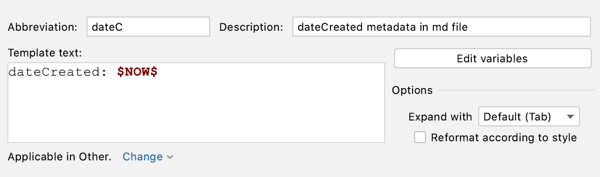
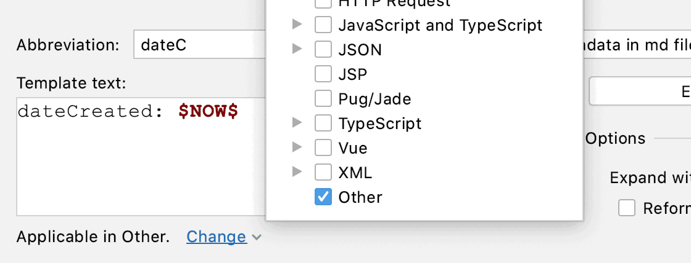
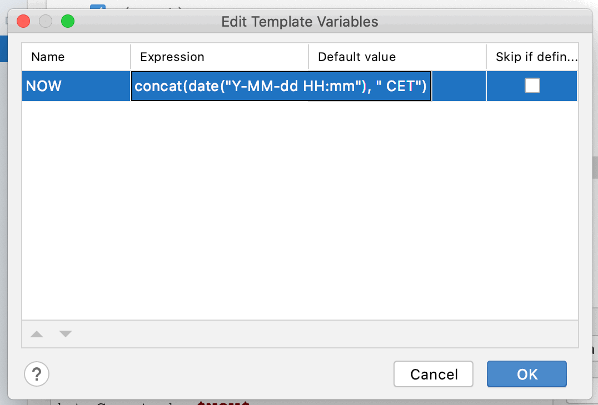

Wolfram Kriesing
- May 2, 2020
- tagged with: #tools
I created a Live Template
to auto-complete dateC+TAB to dateCreated: 2020-05-02 15:27 CET.
See Live Template in Action
I got tired of writing the metadata, I am using here in my tidbits (see the source)
over and over again, metadata such as the current dateCreated, as seen before.
How to create this Live Template?
Shift + Cmd + A (for "Find Action")
Type "Live Template"
Select the one with "Preferences" behind it

Find Action screen in WebStorm
Create a new Live Template, Cmd + N, choose "Live Template"
Fill it in as in the image

The editor for the live template
Make sure to set "Applicable ..." below the fields.
Since I am using it in markdown files, which has no own section I chose "Other", see image

Edit live template type
Note the $NOW$. This is a variable which does NOT exist yet, so let's create it to return
the dateCreated in the format you have seen above (2020-05-02 15:27 CET).
Click "Edit variables" on the right.
Reading a little bit in the JetBrains docs
I found out very quickly that I need to set the value of the variable NOW
to concat(date("Y-MM-dd HH:mm"), " CET").

Edit live template variable
If you tick "Skip if defined" the value will just auto complete and the Live Template is done (otherwise the inserted
value of NOW would be selected for editing, which we don't need here)
Save and apply ... just close all the dialogs :)
Voila, now when I type dateC`+TAB in my markdown file I get the date.
dateCreated: 2020-05-02 15:54 CET